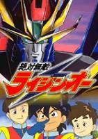

绝对无敌
 http://imgsrc.baidu.com/baike/abpic/item/9dc3cf58a7a84592800a180f.jpg
本作品讲述一班小学五年级生驾驶机器人保卫地球的故事。
动画于1991年至1992年首播，电视版共51集。另外有4集OVA作品，分别5年3组的回忆、初恋大作战!、阳升城机械梦日记、大家是地球防卫组。而5年3组的回忆是唱出歌曲，回忆ＴＶ版的ＭＶ，而之后余下3集OVA是关于地球防卫组6年级故事。
绝对无敌是日升动画 （SUNRISE动画）Eldran系列的第1作品。续篇包括元气爆发（元気爆発ガンバルガー）和热血最强（热血最强ゴウザウラー）。而2000年推出的作品完全胜利是Eldran系列的第4作品。于2004年限量DVD-BOX曾经在日本发行，其后在2005年发售单一DVD。
台湾于1994年至1995年间最初于台湾电视公司播出，并由博英社发行电视本篇与OVA（并不包括《5年3组的回忆》）的录像带，之后又相继在东视综合台、中都卡通台、卫视中文台等频道数度重播过，目前MOMO亲子台仍然在播放中。香港无线电视及中国大陆亦也曾有播出。
电视
来自五次元世界的zh-hant:邪恶;zh-hk:煞古帝国向地球发动侵略攻击。他们的武器是一种称为A|zh-hant:邪恶球;zh-hk:邪恶魔球的东西，当吸收了人类对事物的怨言（例如讨厌ｘｘｘ)以后，依这些事情能够侵入人体或者是物体之中，使其变成邪恶兽。
守卫地球的zh-hant:蓝光人;zh-hk:艾度兰驾着“雷神王”迎战，破坏了帝国司令官zh-hant:撒旦;zh-hk:比锡布的计划。而这些邪恶魔球，亦同时大量散布在地球之中zh-hant:撒旦;zh-hk:比锡布勃然大怒，向雷神王攻击，雷神王不敌倒下。
被打倒的雷神王坠落在一所名为“阳升学园”的校园内。五年级三班的同学接受垂死的zh-hant:蓝光人;zh-hk:艾度兰的任务去保护地球。阳升学园内成为基地，教室成为司令室，对抗zh-hant:撒旦;zh-hk:煞古帝国“地球防卫小组”诞生。
OVA
《雷神王 初恋大作战》
地球防卫组消灭了来自五次元的zh-hant:撒旦;zh-hk:煞古帝国后，五年级三班的各人已经六年级，他们再次埋头苦读，为就读中学而努 力。其中有两名成员因为争夺一个女孩子而起内哄; 与此同时，五次元的敌人再次出现，并放出一只会乱放“邪恋箭”的邪恶兽。它放出的箭能使人对其他人甚至是死物产生无限的倾慕。
而最令人想不到的是，邪恶兽的箭射上了太空去，使月球爱上了地球，因而慢慢移向地球……
《阳升城机械梦日记》
舞台由现代转移至江户时代……（是由吼儿作的故事）
《大家是地球防卫组》
新五次元世界的zh-hant:恶煞;zh-hk:烈古度把zh-hant:撒旦;zh-hk:比劳等五次元人做为人质，迫使zh-hant:法儿洁;zh-hk:花劳些说出地球防卫组的所在地。
同一时间，正当6年3组因为毕业后不再是防卫组的事而苦恼时，*zh-hant:恶煞;zh-hk:烈古度出现。马莉想出动，但是被zh-hant:法儿洁;zh-hk:花劳些阻止。
========================
登场人物
日向仁：松本梨香
控制剑王
zh-hant:月飞（月城飞鸟）;zh-hk:月城飞鸟：岩平理江
控制凤王
zh-hant:星吼儿（星山吼儿）;zh-hk:星山吼儿：まるたまり
控制兽王。
周边人物
zh-hant:白玛莉（白鸟マリア）;zh-hk:白鸟マリア：吉田古奈美
zh-hant:林勉（小岛勉）;zh-hk:小岛勉：岛田敏
zh-hant:元春琪（春野きらら）;zh-hk:春野きらら：南杏子
zh-hant:吉明（今村あきら）;zh-hk:今村あきら ：南杏子
zh-hant:田丽（池田れい子）;zh-hk:池田れい子：铃木砂织
zh-hant:美真（真野美纪）;zh-hk:真野美纪：铃木砂织
zh-hant:广志（高森ひろし ）;zh-hk:高森ひろし：松井摩味
zh-hant:织绘／胖花（石冢织絵）;zh-hk:石冢织絵：松井摩味
zh-hant:小蓉（栗木容子）;zh-hk:栗木容子：岩坪理江
zh-hant:阿明（小川よしあき）;zh-hk:小川よしあき：佐藤智恵
zh-hant:小惠（坂井ときえ ）;zh-hk:坂井ときえ：佐藤智恵
zh-hant:小则（近藤ひでのり）;zh-hk:近藤ひでのり：吉田古奈美
zh-hant:大方（佐藤大介）;zh-hk:佐藤大介：塩屋浩三
zh-hant:王小幽（泉ゆう）;zh-hk:泉ゆう：林原めぐみ
zh-hant:小爱（岛田爱子）;zh-hk:岛田爱子：さとうあい／松本梨香
zh-hant:田老师（筱田俊太郎）;zh-hk:筱田俊太郎：梁田清之
zh-hant:李老师（姫木るる子）;zh-hk:姫木るる子：林原めぐみ
zh-hant:池校长（矢沢永吉郎）;zh-hk:矢沢永吉郎：石井敏郎
洛儿（キャロル）。
田长官（武田长官）：西村知道
zh-hant:蓝光人;zh-hk:艾度兰（エルドラン）：岛田敏
敌对人物
皇帝华沙（ワルーサ）：笹冈繁蔵
zh-hant:撒旦;zh-hk:比锡布（ベルゼブ）：梁田清之
zh-hant:法儿洁;zh-hk:花劳些（ファルゼブ）：林原めぐみ
泰达（タイダー）：吉村よう(～38集)→辻村真人(39集以后～)
zh-hant:恶煞;zh-hk:烈古度（ゴクドー）：大冢明夫
邪恶魔王
由邪恶帝国皇帝华沙赐予撒旦的机器人,全身如水晶一般的结构是其特点,力量足匹敌驾雷神王。后期可跟邪恶兽合体。
登场机械
剑王
人型机器人。出动前躲藏在运动场的跑道下。合体时反转变为雷神王的身体。
凤王
鸟型机器人。出动前躲藏在校园的泳池下。尾巴是雷神王的剑。
兽王
狮子状的机器人。出动前躲藏在体育馆下，篮球场需要反过来才能让兽王弹射出发。合体后獣王的面成为雷神王的盾。
zh-hant:变形雷神王;zh-hk:百胜龙王（爆龙王）
龙型机器人。隐藏在学校地底的支援机械，由司令室无线遥距控制。也可以变身成为人型机器人。学校中央的时钟是倒数计时器。
zh-hant:雷神王;zh-hk:狮人凤
由剑王，凤王和兽王合体的机器人。合体后威力虽然会比分开三部机器人强大，但能量消费也相对提高。
zh-hant:绝对无敌雷神王;zh-hk:超级狮人凤（超级雷神王）
由雷神王和爆龙王合体的机器人。而爆龙王在变身后成为武器。
======================================
主题曲
片头“ドリーム・シフト”
主唱: SILK
片尾“地球防卫组应援歌”
主唱: 地球防卫组合唱队
片尾（OVA 大家是地球防卫组）“FRIENDS”
主唱:日向仁、星山吼儿、月城飞鸟